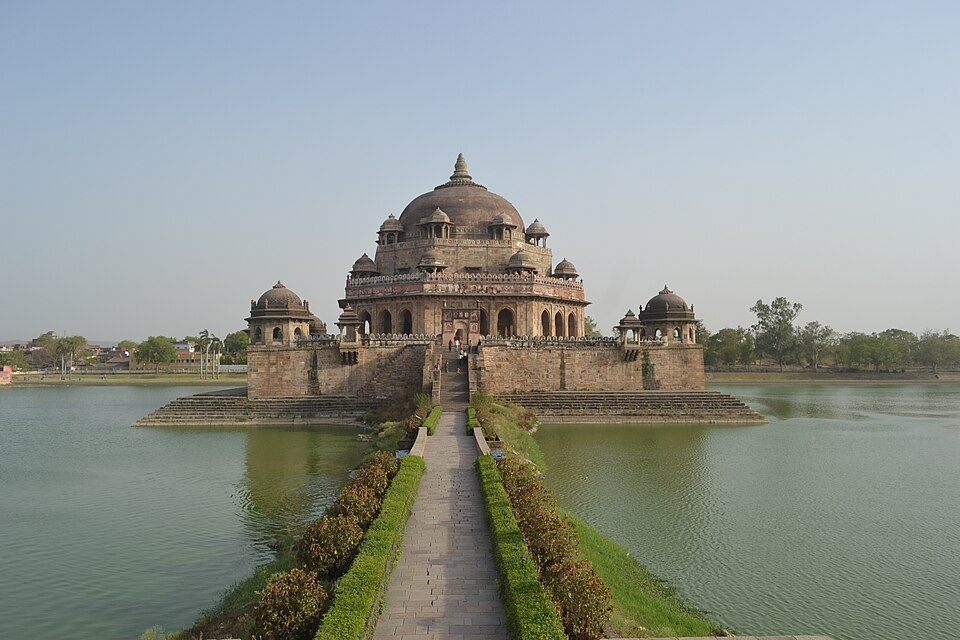
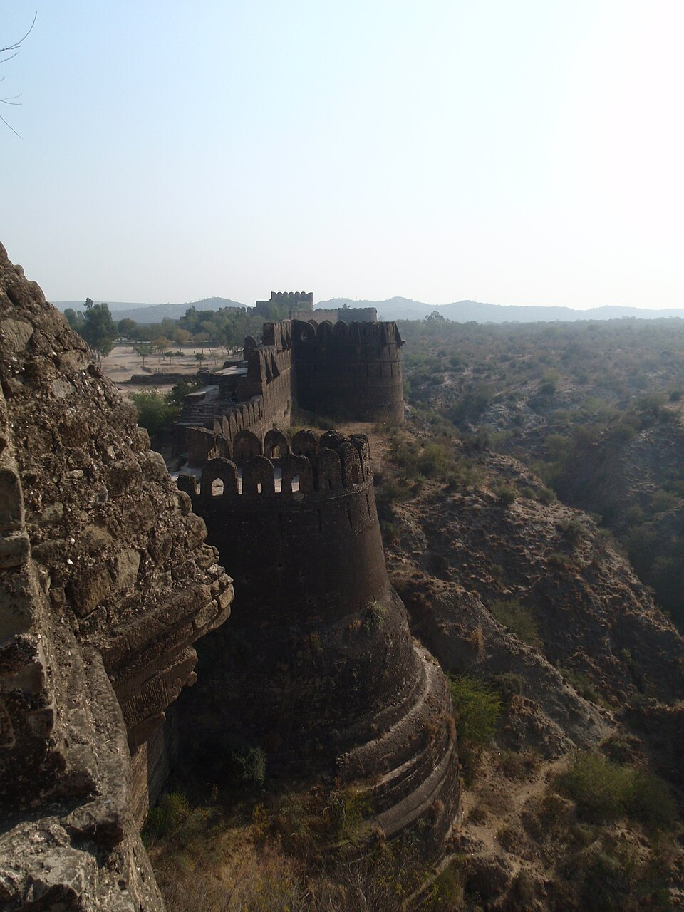

| Aspect | Detail |
|---|---|
| Original name | Farid Khan |
| Birth | 1486 CE, Sasaram (Rohtas district, Bihar) |
| Father | Hasan Khan Suri (Afghan jagirdar in Lodi service) |
| Tribe | Suri (Pashtun tribe from Sulaiman Mountains, Afghanistan) |
| Title 'Sher Shah' | Earned after killing a tiger (sher) — given by Lodi Sultan |
| Early career | Deputy governor of Bihar (under Mughals); gained administrative experience |
| Key battles | Chausa (1539, Bihar), Kannauj/Bilgram (1540) — both defeated Humayun |
| Reign | 1540-1545 (5 years) |
| Death | May 1545, siege of Kalinjar Fort (gunpowder explosion), age 59 |
| Tomb | Sasaram (Bihar) — 122 ft high, in an artificial lake, Indo-Afghan style |
| Reform | Details | Legacy |
|---|---|---|
| Zabt system | Land measured (bighas), classified (polaj/parauti/banjar); tax = 1/3 of produce, cash or kind | Adopted by Akbar/Todarmal (1582-89); basis of Indian land revenue for 400+ years |
| Rupiah currency | Silver Rupiah (~178 grains/11.5g) + copper Paisa; standardised weights | Direct ancestor of the modern Indian Rupee (₹) |
| Grand Trunk Road | Sadak-e-Azam: Sonargaon (Bengal) → Peshawar (~2,500 km); 1,700 sarais; trees; postal system | Modern NH-19 follows parts of this route; passes through Bihar (Patna, Sasaram) |
| Military reforms | Direct payment to soldiers; dagh (horse branding); chihra (soldier roll); ~150,000 cavalry | Adopted by Akbar; prevented ghost soldiers and horse substitution |
| Sarkar-Pargana system | 47 sarkars (districts), each divided into parganas; shiqdar/munsif/qazi at each level | Foundation of Mughal provincial administration; influenced Indian district system |
| Spy system | Barids (spies) throughout empire; reported directly to Sultan | Adopted by Akbar; ensured official honesty and early rebellion detection |
| Justice | 'Justice is the most excellent of religious acts'; impartial for all; Sultan as highest appeal | Influenced Mughal judicial practices; stories of his justice in folklore |
| Postal system | Horse couriers (qasids) between sarais; Bengal→Delhi (1,500 km) in 2-3 days | One of the most efficient medieval postal systems; adopted by Akbar and British |
| Ruler | Reign | Key Features |
|---|---|---|
| Sher Shah Suri | 1540-1545 | Founder; greatest ruler; all major reforms; died at Kalinjar |
| Islam Shah Suri (Salim Shah) | 1545-1554 | Sher Shah's son; maintained reforms; built Shergarh (Delhi); standardised weights |
| Muhammad Shah Adil | 1554-1555 | Weak ruler; dynasty collapsed due to infighting |
Test your knowledge. Select the best answer for each question, then click "Check Answers" to see your score and explanations.